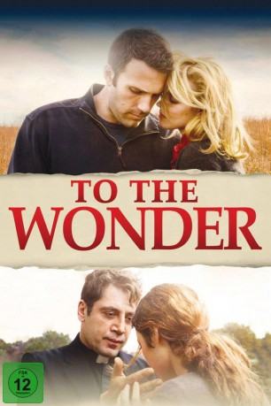

#7004 To the Wonder
 
 IMDB-Wertung: 5.9 / 10
IMDB-Wertung: 5.9 / 10  Metascore: 0
Metascore: 0 
Die junge Pariserin Marina verliebt sich in den Amerikaner Neil, und folgt ihm samt ihrer Tochter in seine ländliche Heimat, doch sie streiten sich bald und auch eine spätere Heirat der Green Card willen kann ihre Beziehung nicht mehr retten. Neil trifft eine Jugendfreundin wieder, die den Tod ihres Kindes nicht verkraftet hat. Der Pfarrer aus Neils Gemeinde hat seinen Glauben verloren, geht aber weiter seinem Job nach, die Armen, Kranken und anderen Hilfesuchenden zu unterstützen.
Jahr: 2012
Dauer: 112 Minuten
FSK: 12
Land: USA Studio: Magnolia PicturesTonspuren: DTS - ,
Untertitel:
Auflösung: 1080p (1920x816) Größe: 8079 MB
Genre: Drama, Liebe
Regisseur: Terrence Malick
Drehbuch: Terrence Malick
Soundtrack:
Darsteller:
 Ben Affleck als Neil
Ben Affleck als Neil Olga Kurylenko als Marina
Olga Kurylenko als Marina Rachel McAdams als Jane
Rachel McAdams als Jane Javier Bardem als Father Quintana
Javier Bardem als Father Quintana- Romina Mondello als Anna
 Charles Baker als Carpenter
Charles Baker als Carpenter Marshall Bell als Bob
Marshall Bell als Bob Darryl Cox als Neighbor #3
Darryl Cox als Neighbor #3- Tamar Baruch als Stepmother
- Ginger Gilmartin als Woman with Cancer , uncredited
- Tom Macdonald als Anna's Lover , uncredited
- Tatiana Chiline als Tatiana
- Tony O'Gans als Sexton
- Casey Williams als Neighbor #1
- Jack Hines als Neighbor #2
- Paris Always als Classmate #1
- Samaria Folks als Classmate #2
- Jamie Conner als Teenage Girl with Baby
- Francis Gardner als Woman at Wedding
- Gregg Elliott als Parish Council President
- Michael Bumpus als Doctor
- Lois Boston als Lois
- Danyeil Inman als Homeless Woman
- Bobby Davis Horsley als Convict
- Wigi Black als Lori
- Ashley Clark als Deaf Woman
- Terry York als Interpreter
- William Riddle als Landlord
- Russell Vaclaw als Justice of the Peace
- Kenneth Woodhams als Pastor
- Amy Christiansen als Mrs. Hart
- Brian Christiansen als Mr. Hart
- Emma Johnson als Carhop
- Bruce Peabody als Lawyer
- Michael Anderson als Visitor
- Darren Patnode als DEQ Investigator
- Shane Brown als Corpse , uncredited
- Dan Corley als Staranger 1 , uncredited
- Scott Mason als Congregation Member , uncredited
- Doug Van Liew als Insolent Man , uncredited
- Cassidee Vandalia als Bride , uncredited
Datei: X:\2012(N-Z)\To the Wonder (2012, FSK12, 1920x816).mkv seit 15.09.2017
Festplatte: HD 2012(N-Z)-2013(A-H)
 Es gibt insgesamt 138 Filme in der Gruppe '2012(N-Z)'
Es gibt insgesamt 138 Filme in der Gruppe '2012(N-Z)'